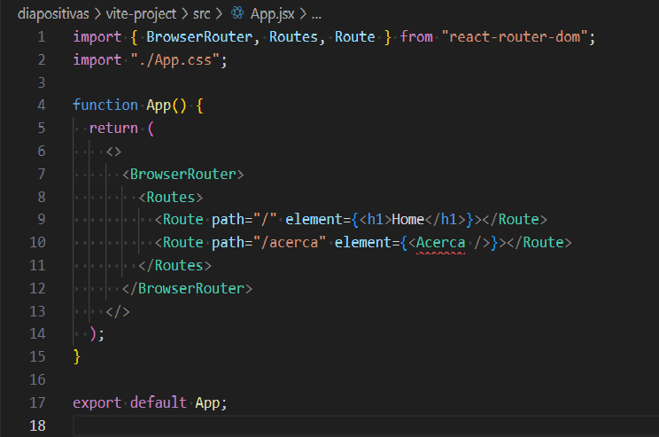

Estructura básica en React Router 6
- Instalamos en la terminal:
npm install react-router-dom- Browser Router
- Proveedor de toda la librería
- Routes
- Contiene las rutas
- Route
- Es la ruta específica. Tiene dos atributos: path y element


La etiqueta NavLink es muy similar a la etiqueta
Link, pero con la diferencia de que nos permite
agregarle una clase CSS cuando la ruta que estamos visitando
coincide con la ruta que le pasamos como parámetro.